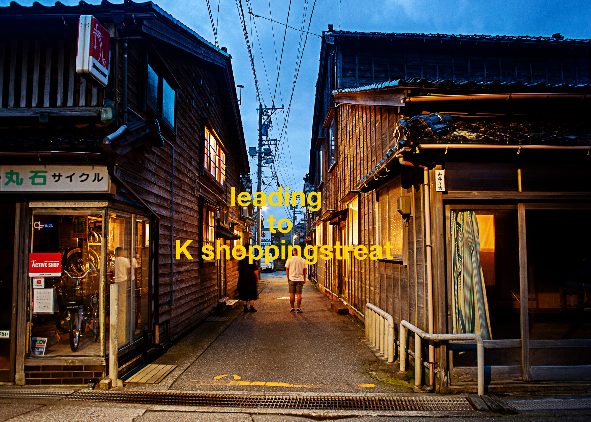
leading to K shoppingstreat_KANAZAWA
2020
KANAIWA ONO ART PROJECT, Artist in Residence, 21st Century Museum of Contemporary Art, Kanazawa JAPAN
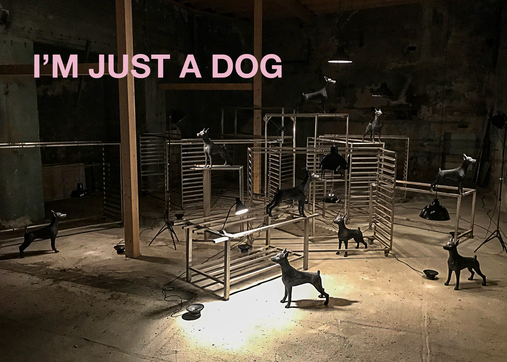
I'M JUST A DOG_k51
2019
OPEN STUDIO, Berlin GERMANY
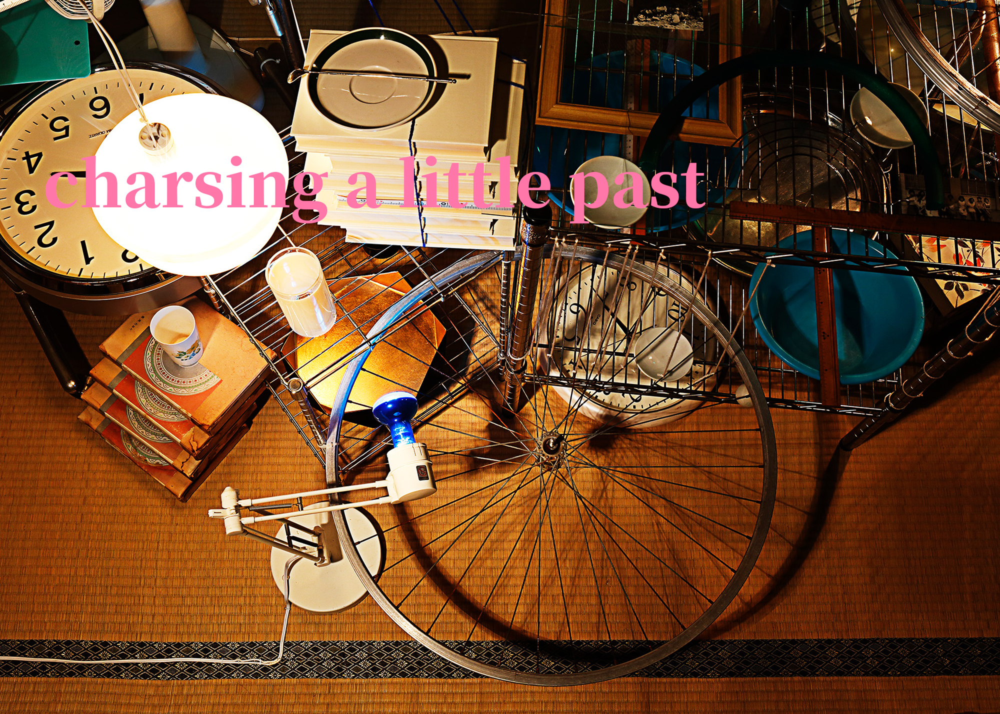
chasing a little past_KANAZAWA
2018
Culture City of East Asia 2018 Kanazawa "Altering Home", 21st Century Museum of Contemporary Art, Kanazawa JAPAN
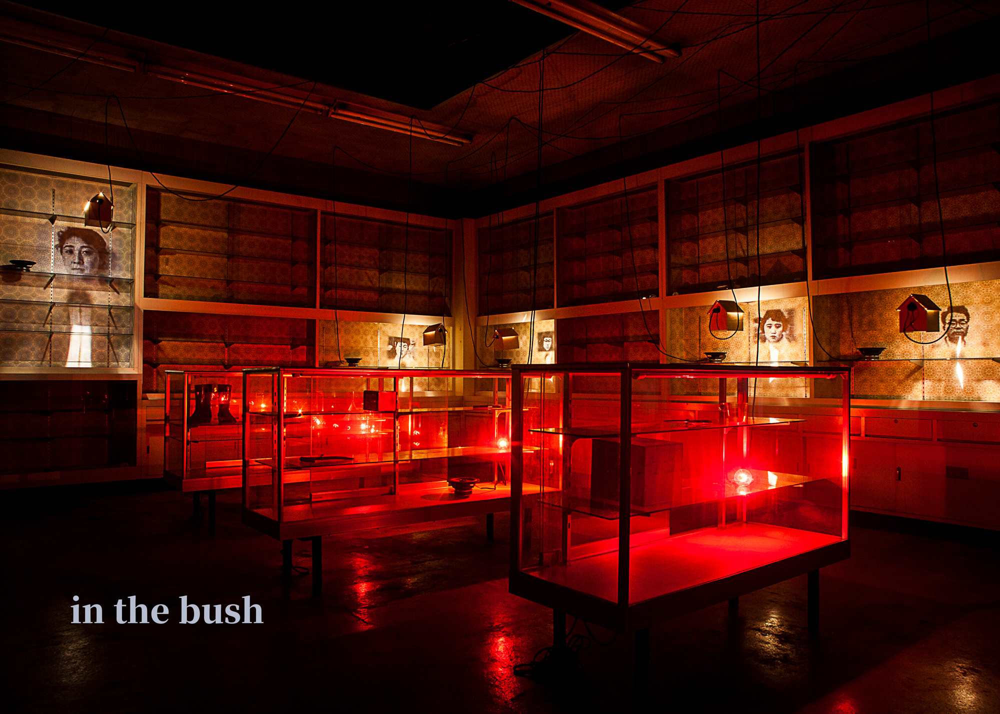
in the bush_NAKANOJYO
2017
NAKANOJYO BIENNALE 2017, Gunma JAPAN
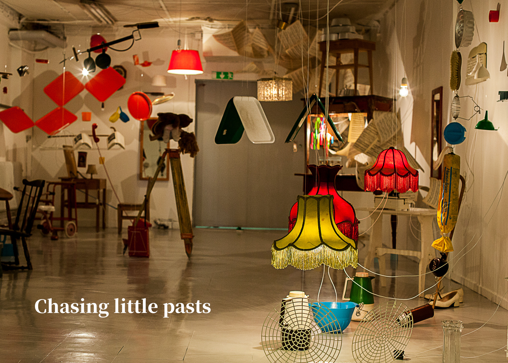
chasing a little past_OPENART
2017
OPEN ART, Orebro SWEDEN
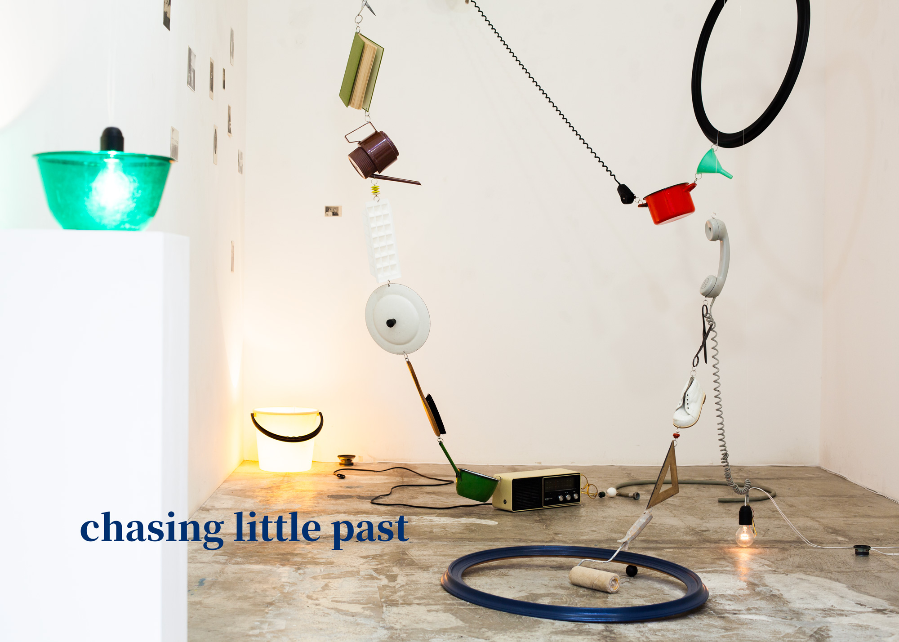
chasing a little past_LAD
2016
LAD Gallary, Aichi JAPAN
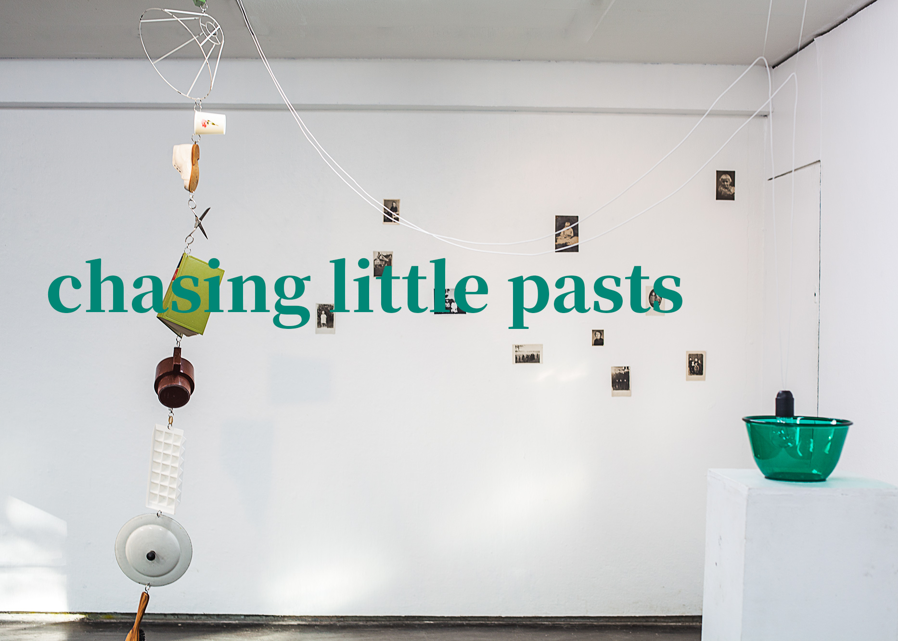
chasing a little past_titanik
2016
TITANIK Artist in Residence, Turuk FINLAND
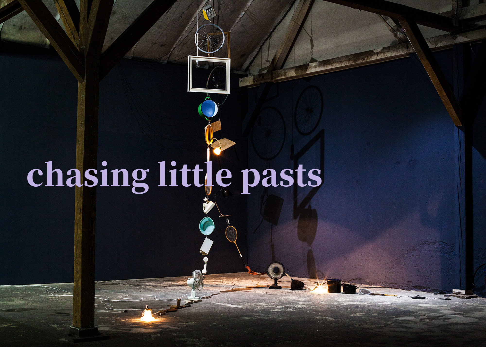
chasing a little past_ostrale
2016
OSTRALE, Dresden GERMANY

blink3 to forget_NAKANOJYO
2015
NAKANOJYO BIENNALE 2015, Gunma JAPAN
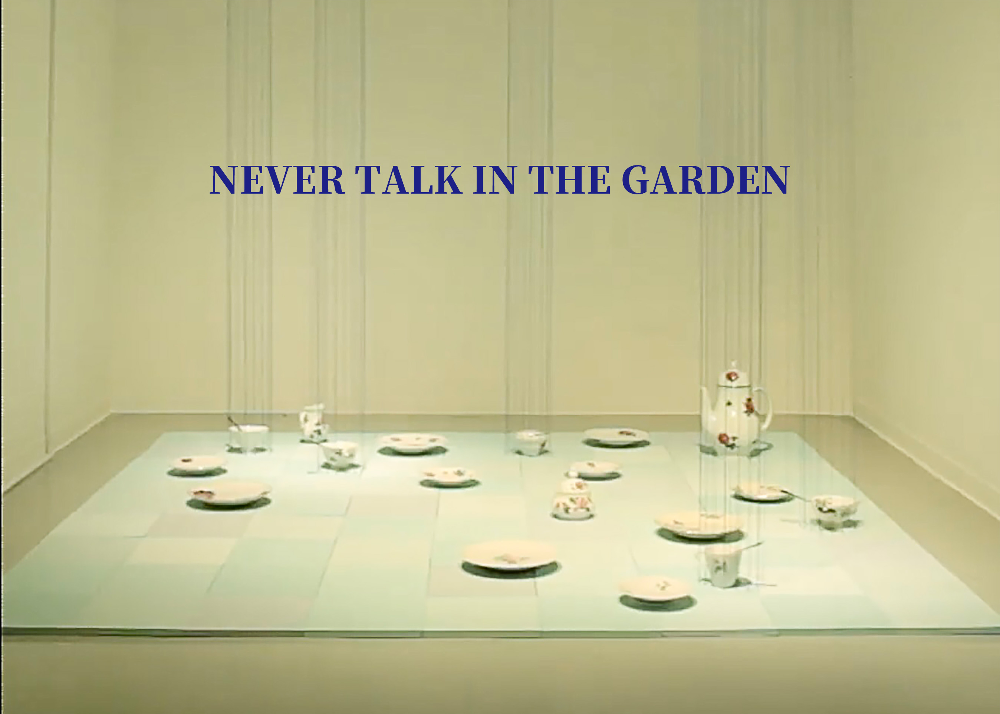
never talk in the garden_TWS_HONGO
2015
TOKYO WONDER SITE, Tokyo JAPAN

chasing little pasts_TWS
2014
Kunstraum Kreuzberg/Bethanien TWS artist in residence, Berlin GERMANY
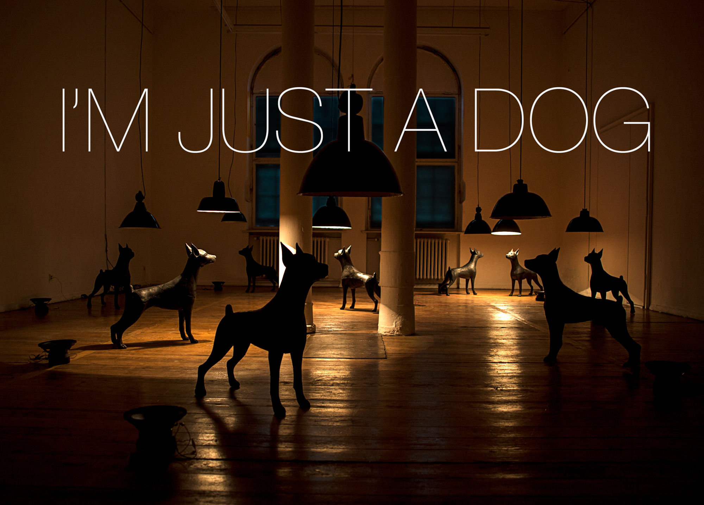
I'M JUST A DOG_TWS
2014
Kunstraum Kreuzberg/Bethanien TWS artist in residence, Berlin GERMANY
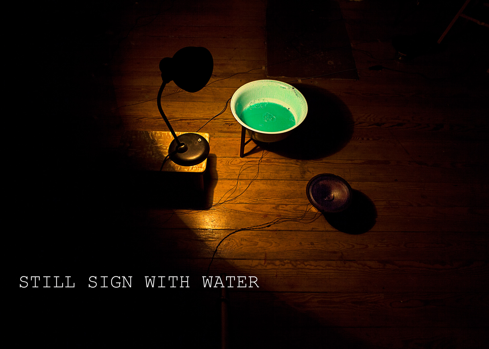
still sign with water_TWS
2014
Kunstraum Kreuzberg/Bethanien TWS artist in residence, Berlin GERMANY
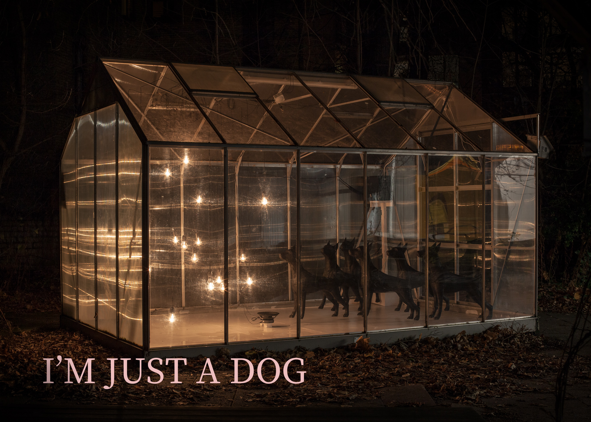
I'M JUST A DOG_superbien!
2013
Superbien!, Berlin GERMANY